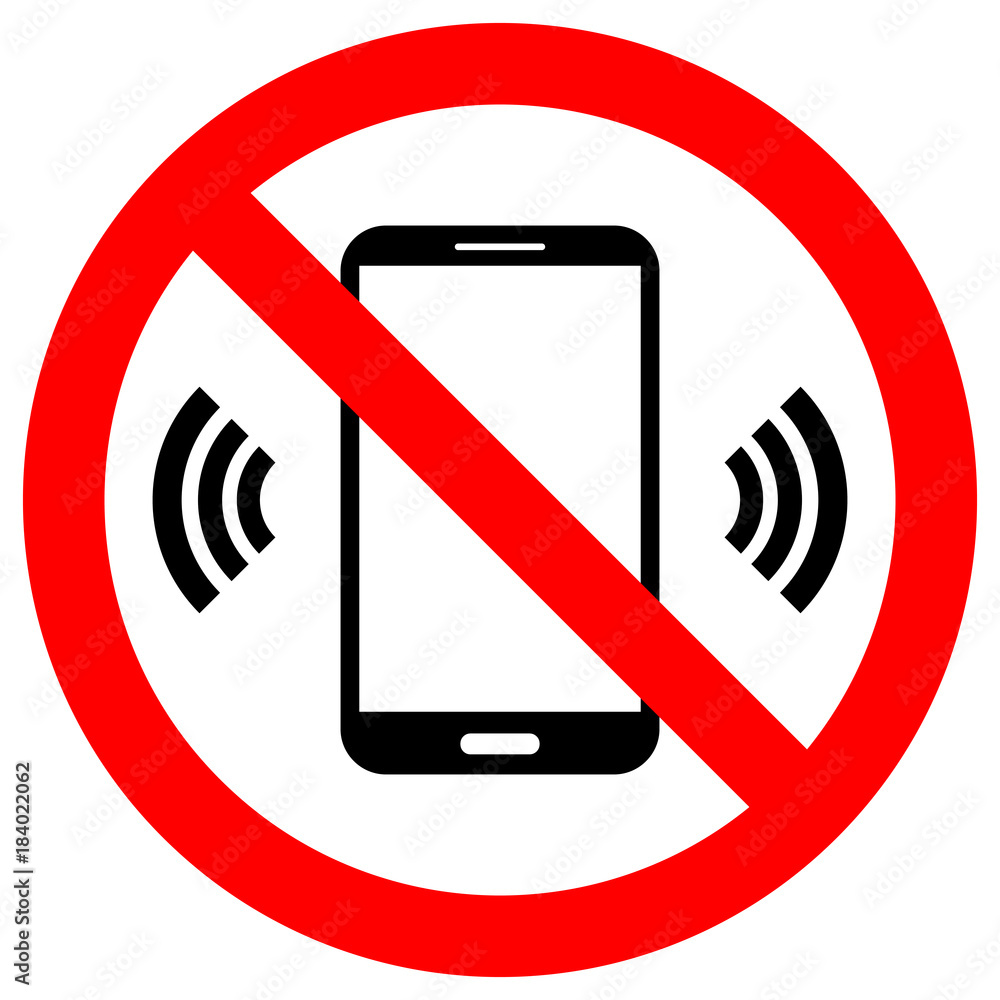

Key Features
-
Discreet Activation
Kavach offers discreet activation methods such as voice recognition, fingerprint recognition, and a custom lock screen interface. This allows users to trigger the SOS alert without drawing unnecessary attention.
Efficient Response
With advanced technology and quick communication channels, Kavach enables users to send SOS alerts promptly. This reduces response time and increases the chances of receiving timely assistance.
Privacy Protection
Kavach prioritizes user privacy by ensuring that the distress call is sent to pre-selected emergency contacts without revealing the user's identity or personal information.
Versatile Activation Methods
The application offers multiple activation methods, including voice recognition, fingerprint recognition, and a custom lock screen interface. This provides users with flexibility and convenience in triggering the SOS alert.
Reliable Technology
Kavach utilizes state-of-the-art technology and rigorous testing to ensure the reliability and performance of its SOS features. This provides users with a dependable safety companion.